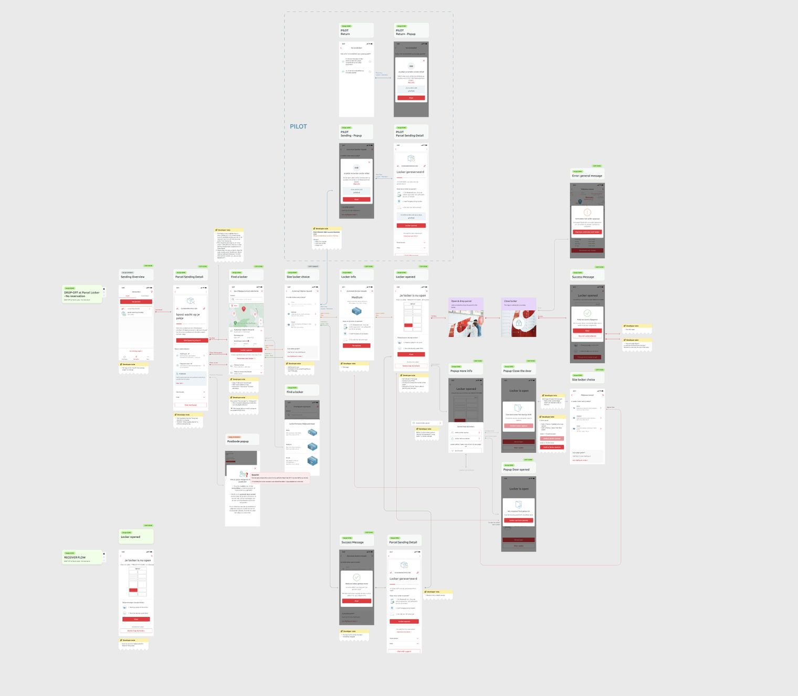

Pourquoi les projets « entre les disciplines » échouent en trois lots
Le montage habituel à Bruxelles : un prestataire digital pour l'app, une agence de service design pour les parcours, un designer industriel pour l'objet. Trois contrats, trois plannings, trois vocabulaires. Et vous, au milieu, devenu l'intégrateur malgré vous. Chaque interface entre lots est un endroit où l'expérience se fissure : l'app promet ce que l'objet ne fait pas, le parcours suppose un geste que personne n'a conçu.
L'alternative n'est pas une mega-agence « full service ». C'est un studio qui traite les trois comme un seul problème de design, avec une équipe qui pense l'objet en dessinant l'écran, et le parcours en dessinant l'objet. Le livrable n'est pas trois designs cohérents entre eux : c'est un seul design qui s'exprime sur trois supports.
« On a déjà un designer produit en interne »
Cas fréquent : l'équipe interne maîtrise le digital, mais personne n'a jamais fait de design physique ni de cartographie de service. Un studio externe peut combler ces lacunes sans friction à trois conditions :
- Compléter, pas doublonner. Le studio prend les disciplines manquantes et travaille avec votre designer, pas au-dessus de lui : revues communes, fichiers partagés, pas de livraison « boîte noire ».
- Séniorité réelle. Intégrer une équipe en place demande des praticiens qui ont déjà été internes quelque part, qui savent ce qu'est une roadmap, un sprint, un arbitrage.
- Un cadrage commun d'abord. Une à deux semaines pour poser le problème ensemble évitent des mois de frictions sur des intentions divergentes.

Démarrer vite quand le comité de direction attend
Six semaines avant un comité de direction, il ne faut pas « une agence rapide ». Il faut un studio capable de cadrer en jours, pas en mois, parce que les personnes qui cadrent sont celles qui produisent. Ce qui est atteignable en six semaines avec une petite équipe senior : le problème reformulé et validé, un concept d'expérience qui couvre écran + geste + objet, et des livrables de conviction (maquettes clés, scénario d'usage, premier modèle de l'objet). Pas un produit fini, et quiconque promet le contraire vous prépare une déception.
Où se situe VeraCruz. C'est exactement notre raison d'être : un studio bruxellois construit pour les problèmes qui croisent produit, service et physique, conçus comme un seul projet, du cadrage à l'exécution, en s'intégrant aux équipes en place. Voir notre pratique et les faits vérifiables.